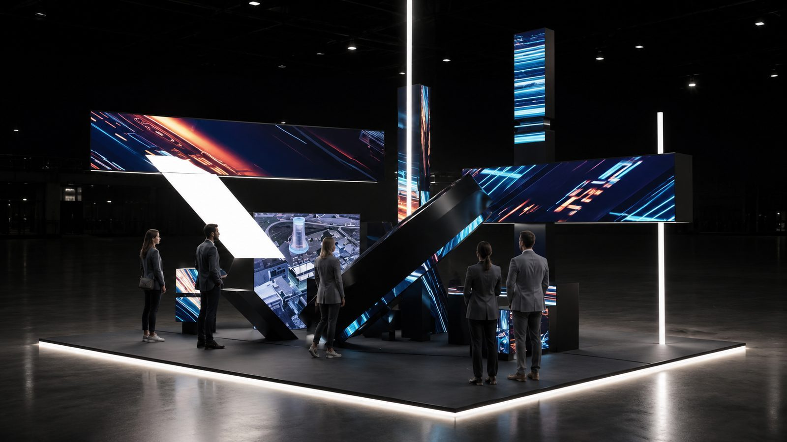

Бренды
Экраны становятся архитектурой
Когда пространство должно иметь собственную форму, а контент — выходить за рамки обычного прямоугольника.
Что это решает
- Создаёт узнаваемый визуальный язык.
- Объединяет архитектуру и медиа.
- Позволяет собирать разные композиции из модулей.
Как это устроено
Экраны разных размеров и геометрии складываются в ломаные объекты. С определённой точки зрения контент объединяется в целое, а при движении раскрывается как многослойная композиция.
Изображение существует одновременно на экране и в реальном объёме.
Механики
- Экраны нестандартной формы
- Анаморфный контент
- Модульная конструкция
- Кинетика — опционально
- Синхронная графика
Почему так
Необычная форма вызывает внимание ещё до появления контента. Анаморфный эффект награждает зрителя за поиск правильной точки и превращает движение по пространству в часть восприятия.
Где применимо
Выставки • шоурумы • retail • музеи • офисы • сцены
Что можно показать
Масштаб, конфигурация, степень кинетики, тип контента и количество точек идеального обзора.
